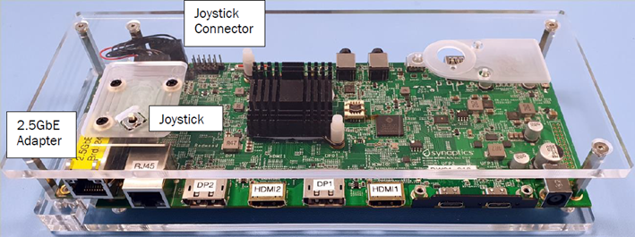
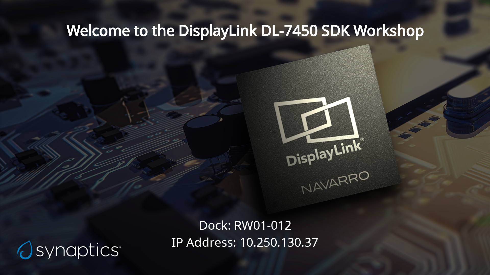

Getting started
You should have received a DL-7450-Redwood-REFD Quad Video IoT dock. You can obtain the data sheet for the board from the DisplayLink Customer Portal or see Introducing the DL-7450. The following image shows the Redwood board.
To get started, connect a monitor to at least one of the DisplayPort or HDMI outputs, and power the dock up using the power supply that is provided in the box. You will also need to connect the board to your network, using the 2.5GbE PHY daughter board.
When the DL-7450 boots you will see a screen like the one below, and if it has connected to the network it should have an IP address. The dock name that is shown on the screen should match the sticker on the DL-7450 board.
The DL-7450 SDK includes a set of sample code availabe to download
here. These, or your own bespoke applications can be
sent to the dock via a REST API. We have provided a script, send_code.py
available here. To run this you will
need some flavour of python 3 installed, and the requests package
installed. You will also need the application key and secret and your
enterprise ID and the DL-7450 ID, which you should have received with your
reference board. For example, to run the carousel application:
python ./scripts/send_code.py \
--key 241FB8AF5E23E00406E985E6-My-Application \
--secret 3334e363-efd2-a764-e789-d7daf71245f9 \
--enterprise 4d0ec8a128f9a6814acf8a96 \
--dock A7BBAFE26E7E94EE650DD9AC039EBC4569265A8EAD08A7F8BA1AAFFFF21523B \
--file carousel.py
You can now start to develop your own DL-7450 applications.
Note
The DL-7450 reference boards are shipped with the read-only datastore
populated with the default application, and some ImageStore images and
KvStore data to support the sample applications. You are free to change the contents of the read-only store
during development. Details can be found in the datastore documentation.